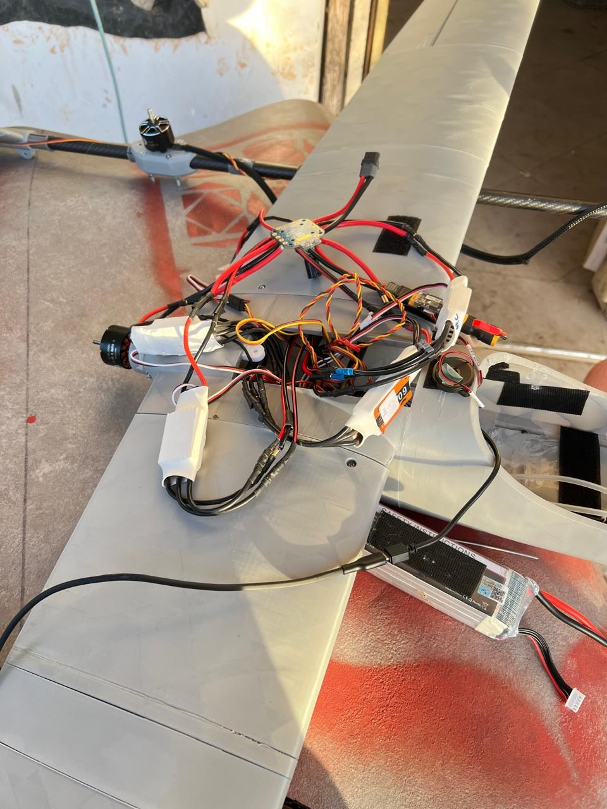

Heavy-lift flight-control support
Diagnose instability and support tuning across large multirotor development platforms.
View project →Aircraft · Robotics · Avionics
Integration, configuration, diagnostics and design-development work across uncrewed systems. Photographs are added only when they match the documented project.
Diagnose instability and support tuning across large multirotor development platforms.
View project →
Investigate unstable response and establish repeatable configuration checks.
View project →
Connect navigation, telemetry and payload interfaces for fixed-wing missions.
View project →
Configure and diagnose a 4+1 flying-wing QuadPlane, addressing hover behaviour, attitude tracking and vibration through iterative test review.
View project →
Investigate position drift, altitude/yaw tracking and configuration concerns using supplied test logs.
View project →
Integrate propulsion and power interfaces on a 4 m twin-waterjet USV.
View project →Connect an autopilot to dual motor controllers and explore UAV-to-rover communication.
View project →
Connect companion compute, camera tracking, video transport and payload interfaces.
View project →Receive and retain AIS data for maritime awareness and replay.
View project →Prepare component, tooling and spare-parts plans across drone sizes.
View project →Develop a modular fixed-wing proof-of-concept architecture with accessible foam structures and tube reinforcement.
View project →Define propulsion, controls and supporting equipment for a larger uncrewed surface-vessel concept.
View project →Prepare a four-motor X500 layout with manufacturable plates and motor-mount interfaces.
View project →Bring frame and motor-arm assembly into a structured sequence for reinforcement, propulsion wiring and avionics installation.
View project →Prepare an actionable review of a companion-computer baseboard project before final production files and bring-up.
View project →Define a Jetson Nano and ArduPilot workflow for vision-based precision landing.
View project →Organize ArduCopter configuration guidance around geofencing, coordinates, return-to-launch and failsafe behaviour.
View project →Investigate configuration and altitude-source options for a multirotor operating without a conventional GPS setup.
View project →
Develop a 2.2 m VTOL aircraft combining four lift motors with separate forward propulsion.
View project →Develop a docking, locking and release subsystem connecting a UAV with a ground vehicle.
View project →
Develop the electrical and autonomy architecture for converting a diesel-powered rescue boat into an uncrewed surface vessel.
View project →Build and configure a 6S FPV quadcopter for stabilized and GPS-assisted flight.
View project →
Convert a Talon fixed-wing airframe to a quadplane while retaining cruise flight capability.
View project →
Build and configure a sensor-equipped S500 quadcopter with assisted-flight functions.
View project →
Build a compact 4S FPV quadcopter with stabilized flight modes and a reliable control link.
View project →Evaluate fixed-wing mission behaviour in a reproducible virtual environment before field testing.
View project →
Develop a tricopter tiltrotor with a V-tail and integrated flight controls.
View project →No matching projects. Clear the search or choose another category.